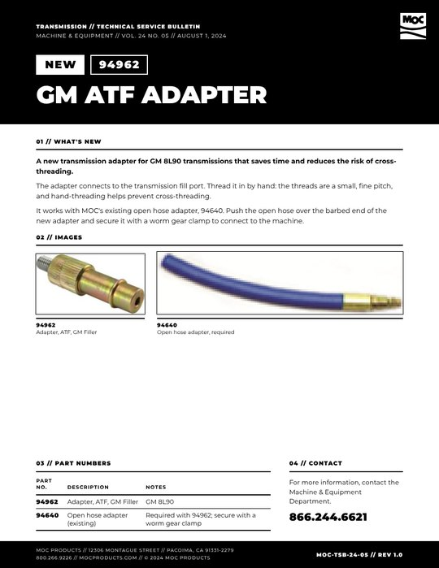
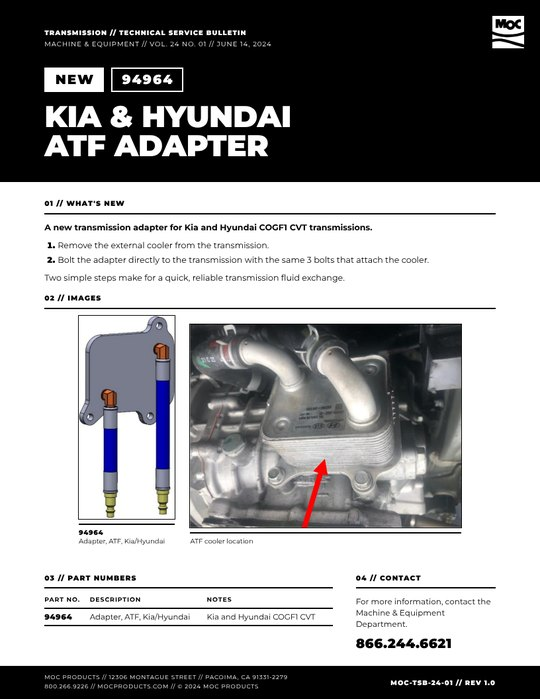

Doc no. MOC-TSB // Technical service bulletins // 16 bulletins
Technical Service Bulletins
New adapters, tools and machine upgrades from the MOC Machine & Equipment Department, newest first. Each bulletin is one page with the part numbers to order.
2026
5 bulletins MOC-TSB-26-05 // Oct 19, 2026 // FuelEDR Advanced Module73510
MOC-TSB-26-05 // Oct 19, 2026 // FuelEDR Advanced Module73510
 MOC-TSB-26-04 // Oct 7, 2026 // TransmissionNissan 9-Speed ATF Adapter94972
MOC-TSB-26-04 // Oct 7, 2026 // TransmissionNissan 9-Speed ATF Adapter94972
 MOC-TSB-26-03 // Oct 7, 2026 // TransmissionVW ATF Adapter94968
MOC-TSB-26-03 // Oct 7, 2026 // TransmissionVW ATF Adapter94968
 MOC-TSB-26-02 // Jun 9, 2026 // Cooling2-Tube Coolant Adapter95398
MOC-TSB-26-01 // Jun 9, 2026 // FuelCleaner Application Tool (CAT Tool)72490
MOC-TSB-26-02 // Jun 9, 2026 // Cooling2-Tube Coolant Adapter95398
MOC-TSB-26-01 // Jun 9, 2026 // FuelCleaner Application Tool (CAT Tool)724902025
3 bulletins

2024
5 bulletins
MOC-TSB-24-05 // Aug 1, 2024 // TransmissionGM ATF Adapter94962 MOC-TSB-24-04 // Aug 1, 2024 // FuelDeluxe Induction Service Tool72150
MOC-TSB-24-04 // Aug 1, 2024 // FuelDeluxe Induction Service Tool72150
 MOC-TSB-24-03 // Aug 1, 2024 // TransmissionCheck Valve for ATF Machines94797
MOC-TSB-24-03 // Aug 1, 2024 // TransmissionCheck Valve for ATF Machines94797
 MOC-TSB-24-02 // Jun 14, 2024 // FuelMercedes Fuel Adapters73068 // 73069
MOC-TSB-24-02 // Jun 14, 2024 // FuelMercedes Fuel Adapters73068 // 73069

MOC-TSB-24-01 // Jun 14, 2024 // TransmissionKia & Hyundai ATF Adapter949642023
2 bulletins
2022
1 bulletin
No bulletin matches that search.